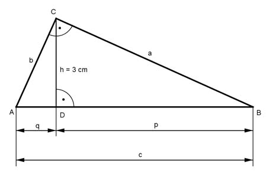

Pythagoras Aufgabe 36 Ein rechtwinkliges Dreieck hat eine Höhe von 3 cm und eine Fläche von 12 cm². Berechnen Sie die Länge der Hypotenuse c und der Katheten a und b in cm.  c * h A = ------- 2 c * 3 12 = ------- |*2 2 24 = 3c |:3 c = 8 cm c = p + q |-q p = c - q = 8 - q Höhensatz im Dreieck ABC : h² = q * p 3² = q * (8 - q) 9 = 8q - q² q² - 8q + 9 = 0 p, q – Formel: p = - 8, q = 9 q1,2 = q1,2 = 4 ± 2,6 (q1 = 6,6) q2 = 1,4 = AD p1 = 8 - 1,4 = 6,6 cm = DB (oder p2 = 8 – 6,6 = 1,4 cm) Satz von Pythagoras im Dreieck DBC: BC² = DC² + DB² | -DC² BC² = a² = 3³ cm² + 6,6² cm² = 53,2 cm² |√ a = 7,3 cm Satz von Pythagoras im Dreieck ADC: AC² = DC² + AD² AC² = b² = 3² cm² + 1,4² cm² = 10,8 cm² |√ b = 3,3 cm